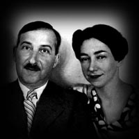

Thursday, August the 12th, 2004
back to: title, date or indexes
Stefan Zweig, whose magnificent Beware Of Pity provided our quote of the day last Friday (6 August), published a book of stories in 1922 entitled Amok : Tales Of Violent Feeling. (It is this collection which includes his most famous story, Letter From An Unknown Woman, memorably filmed by Max Ophuls.) This is such a great title that I am afraid I am going to have to steal it. I hope the Zweig Estate won't get too upset, but I think he is out of copyright anyway, having killed himself, in a double suicide with his wife Lotte Altmann, in Brazil in 1942.

Stefan Zweig & Lotte Altmann
Here is an off-the-cuff plan for my own Amok : Tales Of Violent Feeling:
The Desperate Spinettist. The tale of a spinettist called Dennis, who becomes desperate when he is attacked by a flock of mutant starlings who have been exposed to fiendish Dr Fang's nerve gas.
Blodgett's Frenzy. Outwardly calm, even insouciant, Blodgett harbours a terrible secret. The man within is a seething mass of neurasthenic horror. When an exhausted bus conductor stumbles upon the truth, the scene is set for a thrilling finale set in an area of numerous ponds.
The Simon & Garfunkel Terror. Claudette, a peasant girl, becomes obsessed with Art Garfunkel's hairstyle. She neglects her cow-herding duties and is subject to violent fits. Can she be cured by a protracted campfire singsong of Paul Simon's solo work, or is she still crazy after all these years?
Vagabond Maniac Goes Bonkers. A wandering minstrel, who may well be Ugo of Plovdiv (see 9 August), suffers concussion and amnesia after an accident involving a moorhen, a speedboat, and a swarm of killer bees. We follow him as he trudges about hither and thither, until he goes berserk. In Plovdiv.
That will do for now. If any readers would like to contribute their own Tales Of Violent Feeling, send them in!